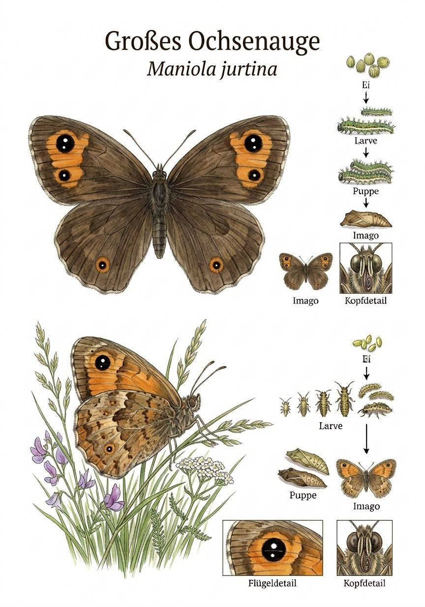
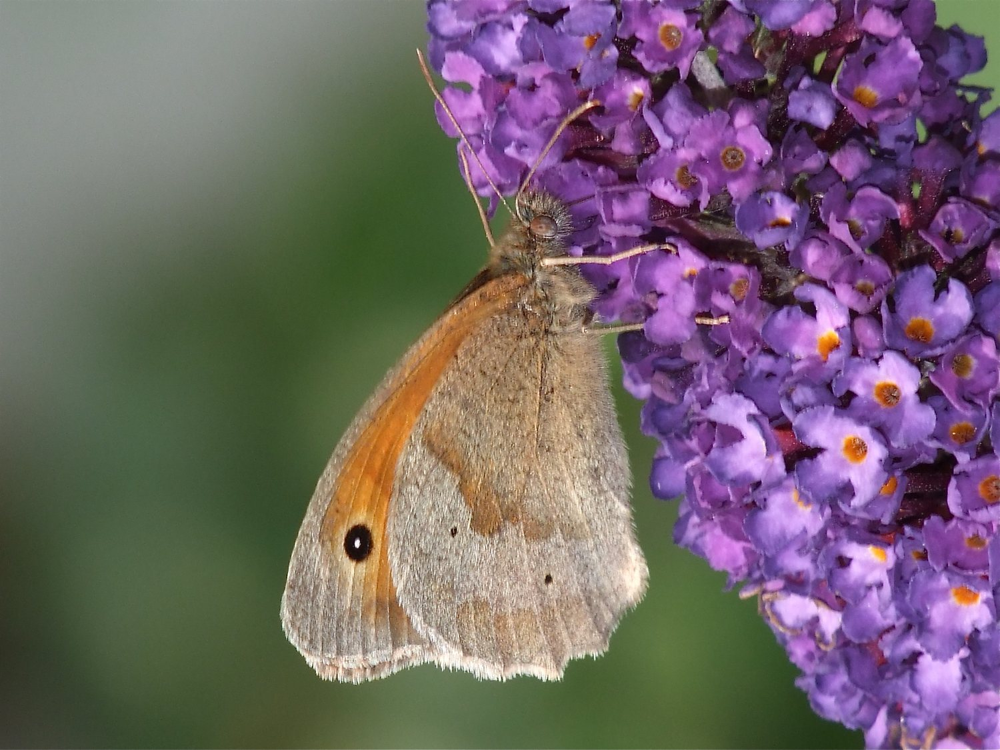

Insekten › Schmetterlinge › Tagfalter › Augenfalter

Maniola jurtina

Foto: Michael Baur · Olympus OM-5 · CC BY-NC
Sein Name ist Programm: Das Große Ochsenauge trägt auf jedem Vorderflügel einen großen, schwarzen Augenfleck mit weißem Pupillenpunkt auf orangem Grund. Wenn ein Vogel von hinten angreift und die geschlossenen Flügel aufschlagen, starrt ihm plötzlich ein riesiges Auge entgegen – der Angreifer zuckt zurück. Ein einfacher, aber wirkungsvoller Trick, der diesen unscheinbaren braunen Falter durch den Sommer bringt.
Während manche Schmetterlinge nur an bestimmten Pflanzen oder in besonderen Lebensräumen vorkommen, ist das Große Ochsenauge buchstäblich überall. Jede Wiese, jeder Wegesrand, jeder Garten mit ein wenig Gras beherbergt ihn im Sommer. Er ist damit der am häufigsten vorkommende Tagfalter Mitteleuropas – und trotzdem wird er oft übersehen, weil er so unscheinbar braun wirkt. Ein zweiter Blick lohnt sich immer.
Die Raupe des Großen Ochsenauges frisst – wie die des Schachbrettfalters – an Gräsern. Sie überwintert als Jungraupe und frisst sich erst im Frühjahr fertig. Das macht sie abhängig von mehrjährigen, ungestörten Grünlandflächen. Intensiv gemähte Golfrasen oder häufig gestutzte Zierlawns bieten ihr kaum Lebensraum. Wer einen Bereich des Rasens einfach stehen lässt, schafft damit eine der einfachsten und wirksamsten Maßnahmen für die Faltervielfalt.
Texte und Bilder aus der Broschüre „Schmetterlinge im Ebsdorfergrund“ (Michael Baur), 1:1 übernommen · Fotos CC BY-NC, Illustrationen im Stil klassischer Lehrtafeln. Die Artseite ist der gemeinsame Endpunkt von Bestimmungsschlüssel und Stammbaum.